Convolutions from scratch.
pictures of grayscale, 9 × 9 box filter (dark edge created by zero padding), Dx and Dy.
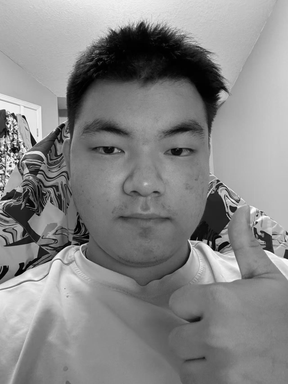
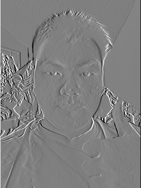
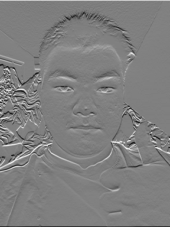
Runtime & accuracy
| Filter | 4 loops / ms | 2 loops / ms | SciPy / ms | 4-loop error | 2-loop error |
|---|---|---|---|---|---|
| 9 × 9 box | 1833.915 | 201.547 | 9.292 | 2.00e-15 | 5.55e-16 |
| Dx | 74.203 | 189.325 | 0.558 | 0.00e+00 | 0.00e+00 |
| Dy | 83.760 | 188.292 | 0.947 | 0.00e+00 | 0.00e+00 |
The reference is scipy.signal.convolve2d(image, kernel, mode="same", boundary="fill", fillvalue=0). Two loops are faster for the 9 × 9 box filter because NumPy can perform all 81 multiplications and sum the results in one operation, saving time spent on loops. However, two loops are slower for Dx and Dy because each pixel requires only three calculations, so calling np.sum() costs more time.
Core implementations
Both functions flip the kernel and use zero padding to preserve image size. The shared _prepare helper converts to float64, flips both axes, and pads each axis by (k // 2, (k − 1) // 2) using np.pad(..., mode="constant", constant_values=0); see full source.
Four loops
def convolve_four_loops(image, kernel, mode="same"):
padded, flipped, output = _prepare(image, kernel, mode)
kh, kw = flipped.shape
for row in range(output.shape[0]):
for col in range(output.shape[1]):
for kr in range(kh):
for kc in range(kw):
output[row, col] += padded[row + kr, col + kc] * flipped[kr, kc]
return outputTwo loops
def convolve_two_loops(image, kernel, mode="same"):
padded, flipped, output = _prepare(image, kernel, mode)
kh, kw = flipped.shape
for row in range(output.shape[0]):
for col in range(output.shape[1]):
window = padded[row:row + kh, col:col + kw]
output[row, col] = np.sum(window * flipped)
return outputFinite Difference Operator
I convolved the cameraman image with Dx = [1, 0, -1] and its column form Dy, then computed magnitude = sqrt(dx² + dy²) and edges = magnitude > 0.2. Symmetric padding avoids artificial responses at the image border.
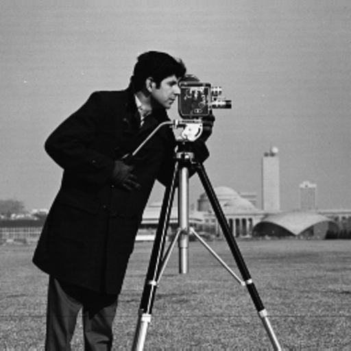
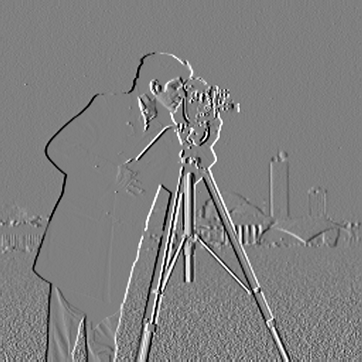
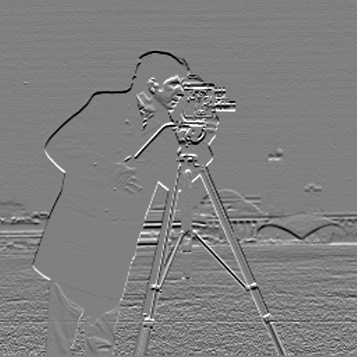
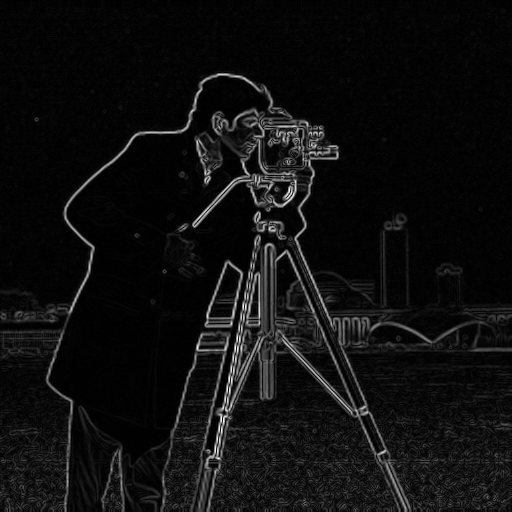
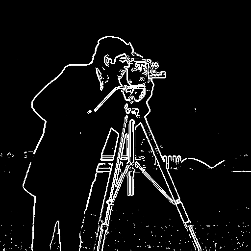
I tried thresholds 0.08, 0.2, and 0.3 on the unscaled magnitude of the [0, 1] image. I chose 0.2: 0.08 retains too much grass texture, while 0.3 removes weaker parts of the camera and tripod contours. Dx and Dy share a signed display scale with gray at zero; the magnitude is scaled only for display.
Derivative of Gaussian
First, use Gaussian blur with σ = 1.5 so each pixel takes the surrounding pixels into account, smoothing fine texture. Then apply Dx and Dy and combine them to get the magnitude (magnitude = np.sqrt(dx**2 + dy**2)), which means areas with stronger changes are brighter. Since blur weakens gradients, we set the threshold to 0.12 after trying different values. Notice that most of the noise from the grass has been removed this time.
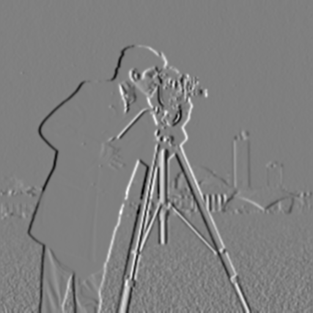
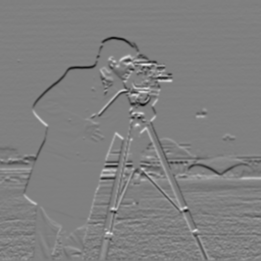

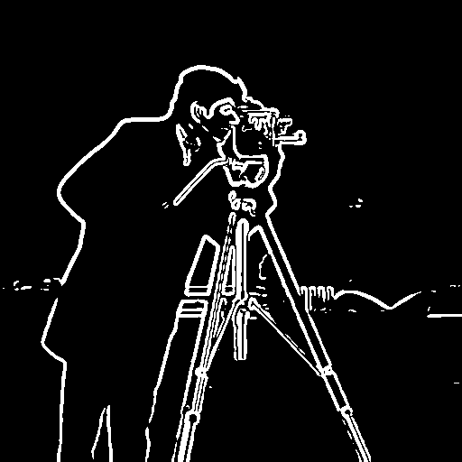
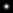
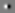
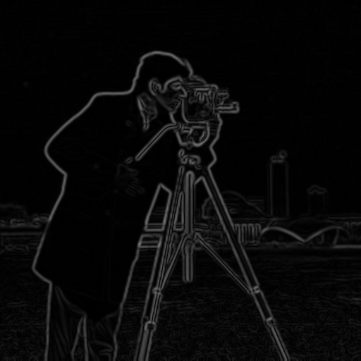
Applying DoG directly to the image gives us the same magnitude image.
The reason is that, for the original image I, Gaussian kernel G, and gradient filter D (either Dx or Dy), the first method computes (I ∗ G) ∗ D, while the second computes I ∗ (G ∗ D). Let B represent the image after Gaussian blur:
Then apply D:
Substituting B gives:
Let k = i + j. Regrouping the terms gives:
The part inside the parentheses is (G ∗ D)[k]. Therefore, (I ∗ G) ∗ D = I ∗ (G ∗ D), so the two methods give the same result.
Gradient Orientations · HSV
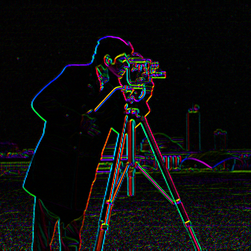
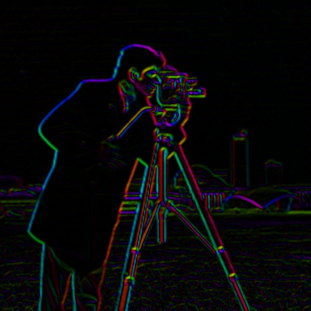
left
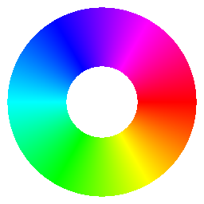
0°right
Without built-in angle functions, I fold the gradient into the first octant, reduce the slope to |z| ≤ √2 − 1, evaluate a 20-term alternating arctangent series, and restore the quadrant. In HSV, hue gives direction, saturation is 1, and brightness gives gradient magnitude using one shared scale. Flat regions are black; positive y points down. Smoothing removes many weak, noisy directions.
What I Learned · Part 1
I learned how to use convolution to work with the high-frequency details and low-frequency information in an image. I also learned to compute the horizontal and vertical gradient components, use them to detect changes in different directions, and combine them to calculate edge strength and orientation. Gaussian smoothing reduces noise before edge detection, but it also weakens some fine details.
Mix the frequencies.
Image Sharpening
I subtract the blurred image from the original to get high frequencies, then add them back: sharp = image + α × (image − blur). Then we define δ such that image ∗ δ = image, which gives sharp = image ∗ ((1 + α)δ − αG). The single convolution filter is (1 + α)δ − αG. Below are illustrations of two images.
Taj Mahal

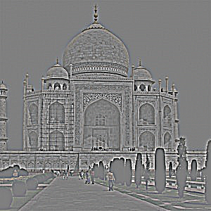
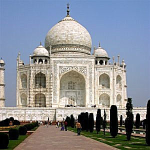
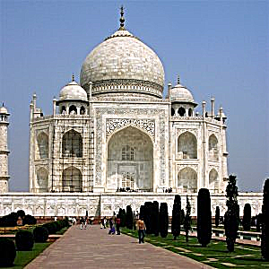
My portrait
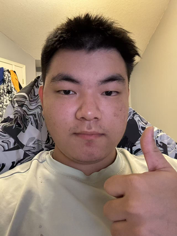
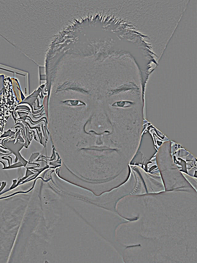
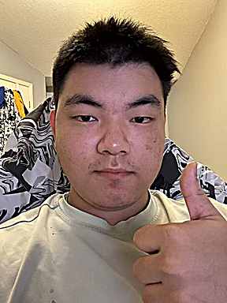
Bigger α makes edges stronger, but α = 2 also makes hair and small details look rougher. Sharpening increases existing details; it does not create missing information.
Blur a sharp image, then sharpen it again
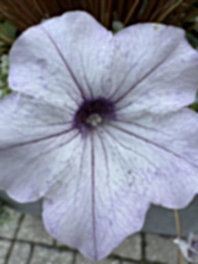
The sharpened flower looks clearer than the blurred one, but the fine veins are still softer than the original. PSNR (Peak Signal-to-Noise Ratio) changes from 27.62 dB to 29.65 dB after sharpening. A higher PSNR means a smaller pixel error relative to the original.
Hybrid Images
I use the method described by Oliva et al. (SIGGRAPH 2006) [1]:
I first align the two images, focusing on the eyes for portraits and the centers for the flower and orange. The close view shows the high-frequency image, while the far view shows the low-frequency image.
Derek + Nutmeg
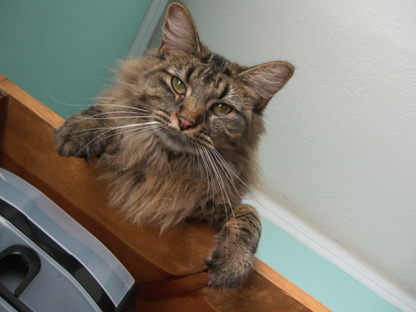
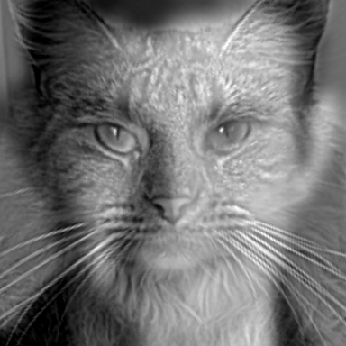
σ low = 8, σ high = 4, high-frequency gain = 1.2. Look close for nutmeg, then step back for derek.
Orange + my flower
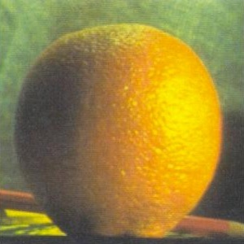
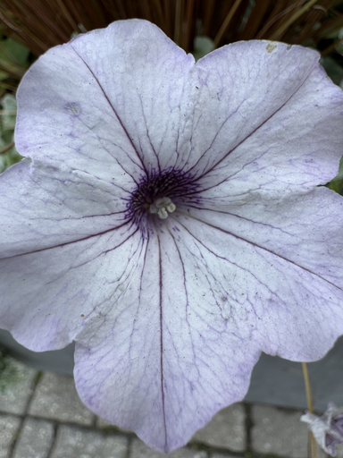
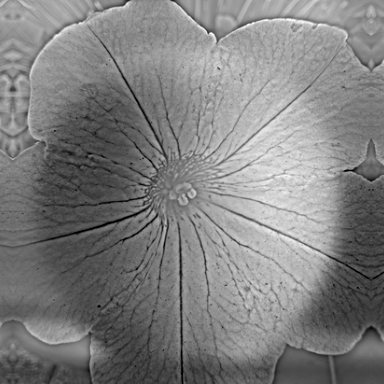
σ low = 7, σ high = 3, high-frequency gain = 1.4. Look close for flower, then step back for orange.
Leo + my portrait · full process [2]
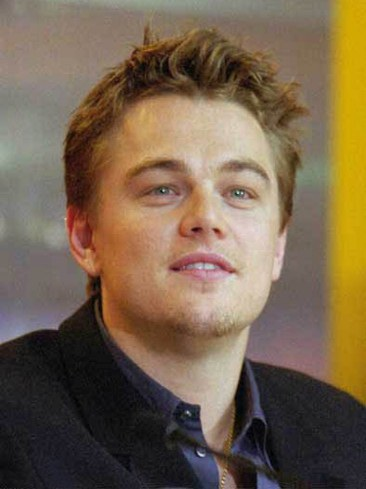
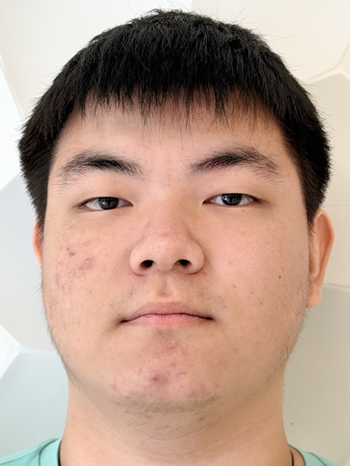
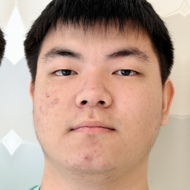
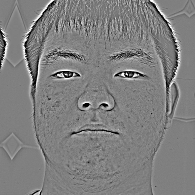

I align the two eye centers with a similarity transform. My face is more visible close up, while Leo is more visible in the small view. I chose σ low = 6 and σ high = 3: smaller values keep too much of Leo's detail, while larger values make my face's lines too broad. Their approximate half-amplitude cutoffs are 0.031 and 0.062 cycles/pixel. The high-frequency gain is 1.2.
Failure case. This pair only partly works, especially on the left side of the image. Leo's low-frequency shadow and face shape do not match my cheek and hairline, leaving visible ghosting. Aligning the eyes cannot fully match the face shapes or lighting, so changing σ alone does not solve the problem.
Change the viewing size
Move each slider to see when the subject changes. At a fixed viewing distance, a smaller image approximates a farther view.
Cutoff comparison
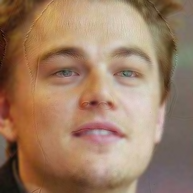

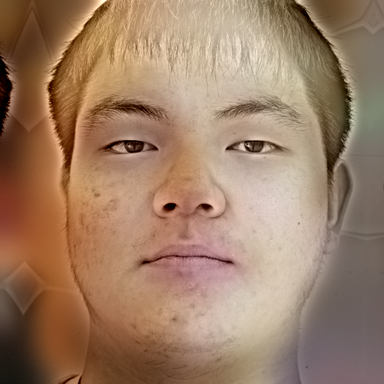
Fourier analysis · inputs, filtered images, and hybrid
I use log(1 + |fftshift(fft2(gray))|) with one display scale. Low-pass energy stays near the center; high-pass removes much of the central energy; the hybrid keeps both.
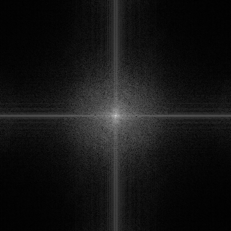
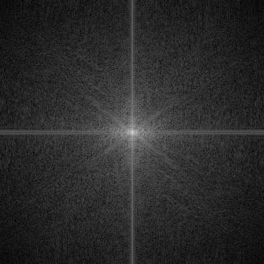
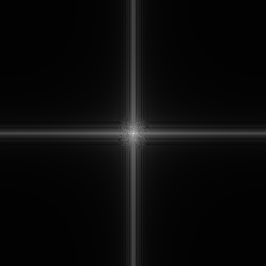
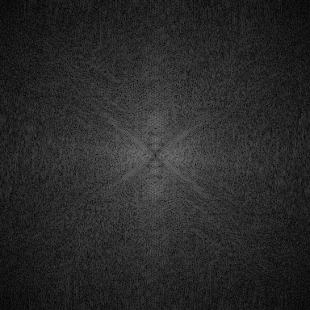
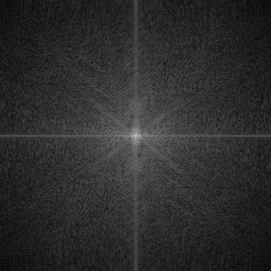
Color experiment
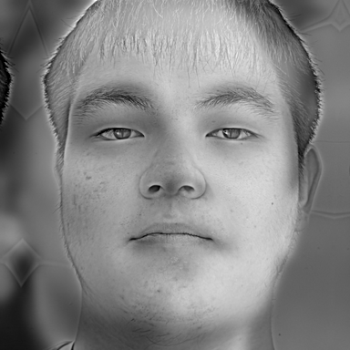
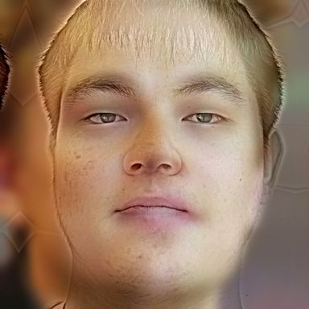
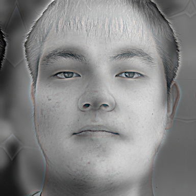
Using color in the low frequencies and grayscale in the high frequencies works better here and helps the close and far views behave as expected.
Gaussian & Laplacian Stacks
I build six Gaussian levels with σ = 0, 2, 4, 8, 16, 32, without making the image smaller. Each Laplacian level is the difference between neighboring Gaussian levels; the last level keeps the remaining low frequencies. Adding all Laplacian levels reconstructs the image.
For the Laplacian stack, we look for the differences between adjacent blurred versions. Once we have the Gaussian levels, we can calculate . Finally, we keep as the residual so we can recover the image by adding all the layers:
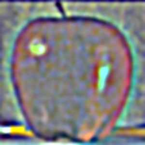

All Gaussian levels · apple, orange, and oraple
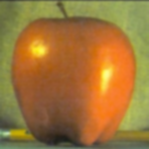


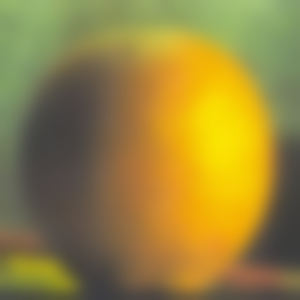


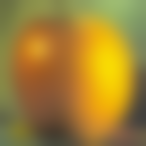
All Laplacian levels · apple, orange, and oraple
Gray is zero. Each detail band is contrast-stretched for display; the final residual keeps its normal colors.
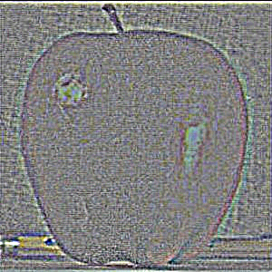
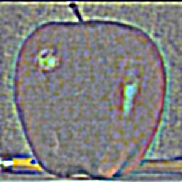
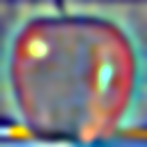

Recreated Figure 3.42 · (a) through (l)
Rows 1–3 show levels 0, 2, and 4. Columns show the masked apple contribution, masked orange contribution, and their sum. The last row adds every level back. Each signed row shares one display scale.
Multiresolution Blending
I reuse the code implemented in 2.3.
Apple + orange · straight seam


The mask chooses apple on the left and orange on the right. Direct splicing leaves a visible cut. The stack blend makes the color transition smoother while keeping each fruit's texture. RGB blending keeps the red and orange colors that disappear in grayscale.
Flower fruit
My face in Leo's portrait


I used my flower photo with the orange image and a cartoon sun-shaped mask, then my portrait with Leo's picture and a face-shaped mask.
My favorite blend · My face in Leo's portrait
For my face in Leo's portrait, the first three rows show masked Laplacian bands at levels 0, 2, and 4. Columns show my portrait's contribution, Leo's contribution, and their sum. The last row adds all six levels back, like the blending process in Burt and Adelson's Figure 10.

Limitation. The hairline and skin color still cause some strange effects, but at least grayscale removes some of the color mismatch. Still, it looks relatively more natural than the hybrid images in 2.2.
What I Learned · Part 2
I learned how frequency information can be used for sharpening, hybrid images, and multiresolution blending. Hybrid images mix low frequencies from one image with high frequencies from another, so what we see changes with viewing distance. Gaussian and Laplacian stacks let us blend both images at different scales using masks, then reconstruct the result. This showed me how blending across scales can make spatial transitions smoother while preserving details.
To blur or not to blur, that is the question - Ke Yang
Sources: input images · Berkeley course materials · Derek/Nutmeg course samples · parameters and checks
References
[1] Oliva, A., Torralba, A., & Schyns, P. G. (2006). Hybrid images. ACM Transactions on Graphics, 25(3), 527–532 (SIGGRAPH 2006). DOI · PDF.
[2] Jaud (Falkenauge). (2000). Leonardo DiCaprio.jpeg. Wikimedia Commons. CC BY-SA 3.0. The source photo was cropped and adjusted on Wikimedia Commons. Alignment, filtering, hybridization, multiresolution blending, and grayscale conversion by Ke Yang. Image adaptations incorporating this photograph in Parts 2.2 and 2.4 are shared under CC BY-SA 3.0. These are coursework composites; no endorsement is implied.